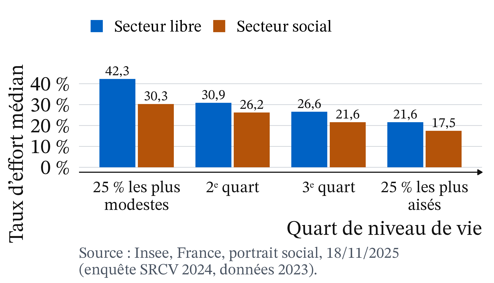
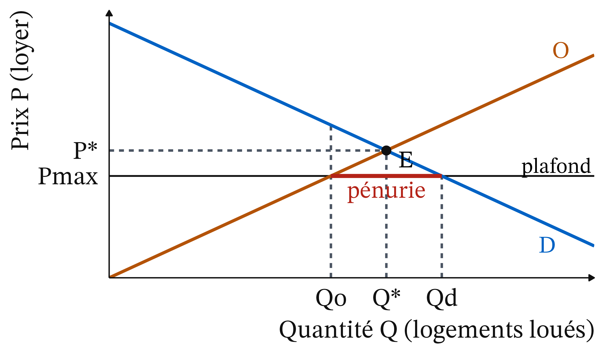
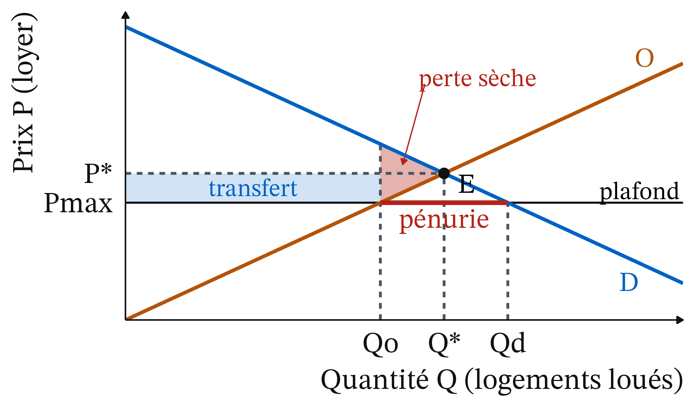
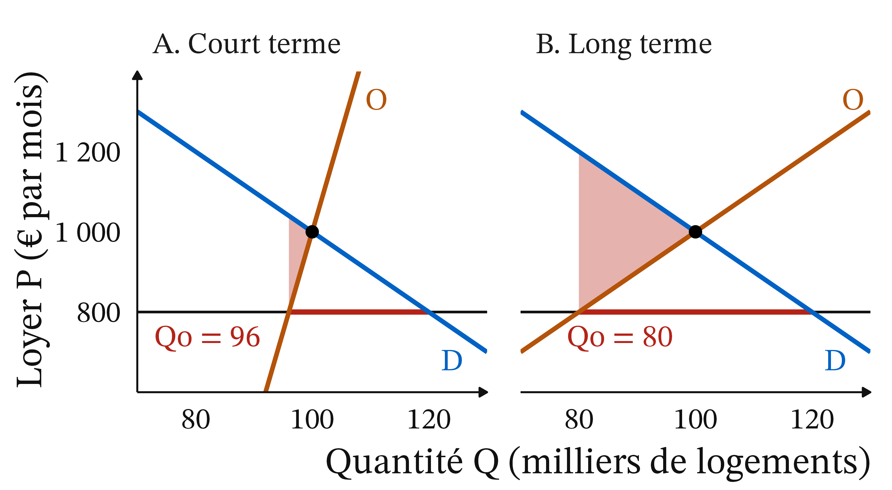
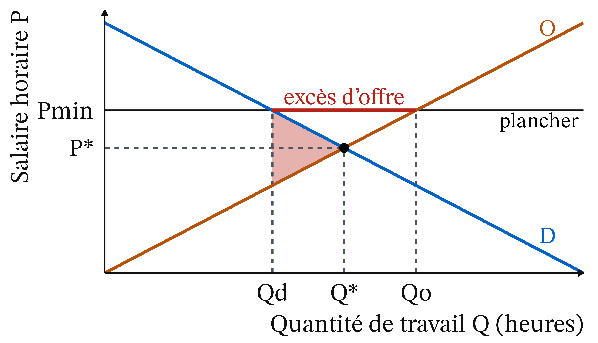
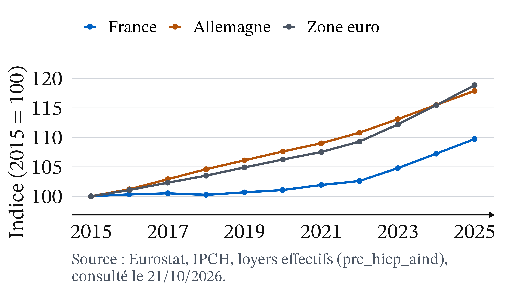

Faut-il encadrer les loyers ?
CM 4 · Partie I · Marchés, prix et régulations
ATER en économie, Université Clermont Auvergne
Dans le secteur libre, se loger pèse environ deux fois plus sur les locataires modestes que sur les aisés

Figure 1
Taux d’effort médian, France métropolitaine, 2023 (Insee, France, portrait social, 18/11/2025).
Depuis 2019, le loyer des nouveaux baux est plafonné, aujourd’hui dans 70 communes
- Plafond fixé chaque année par le préfet, à Paris depuis le 1er juillet 2019
- En octobre 2026 : 9 territoires et 70 communes (Sénat)
Faut-il encadrer les loyers ?
Rappel : un plafond fixé sous P* crée une pénurie qu’il faut répartir autrement
- Plafond : prix maximal fixé par la loi
- Pénurie : quantité demandée supérieure à la quantité offerte
- Surplus : gain d’un échange
- Offre rigide : réagit peu au prix
Friedman et Stigler : un plafond remplace le prix par le hasard et le favoritisme
 1976 · UPI, domaine public, Wikimedia Commons
1976 · UPI, domaine public, Wikimedia Commons
Milton Friedman et George J. Stigler (1946), Roofs or Ceilings? · école de Chicago (néoclassique). Plafonds et pénurie se perpétuent l’un l’autre ; l’offre est découragée.
En 1946 sous plafond, 375 recherches de logement pour 10 offres ; en 1906, une pour 10

San Francisco, vers avril 1906 : camp de tentes pour sinistrés sur Jefferson Square. Photo : auteur non identifié, domaine public, NARA, via Wikimedia Commons.
(Petites annonces, Friedman et Stigler, 1946)
Un plafond n’agit que s’il est fixé sous le prix d’équilibre
Définition 1 (Prix plafond contraignant) Un plafond Pmax est contraignant s’il est fixé sous P*. Au-dessus de P*, il n’a aucun effet.
Le surplus se lit comme une aire ; la perte sèche est un gain que personne ne récupère
Définition 2 (Surplus) Consommateur : aire entre la demande et le prix. Producteur : aire entre le prix et l’offre. Total : leur somme.
Définition 3 (Perte sèche) Baisse du surplus total causée par une intervention : des échanges ne se font plus.
L’offre de logements est rigide à court terme, souple à long terme
- Court terme : le parc est donné
- Long terme : vente, meublé de tourisme, moins d’entretien, moins de construction
« Un instrument redistributif à court terme, mais générateur de rationnement, de pertes de bien-être et de mauvaise allocation à long terme » (Chapelle et Fack, mai 2026)
À San Francisco, les locataires protégés restent, mais les bailleurs réduisent l’offre de 15 %
Diamond, McQuade et Qian (2019), American Economic Review · économie empirique. Extension de 1994 : locataires protégés 20 % moins mobiles ; offre à louer réduite de 15 %, ce qui a probablement fait monter les loyers à long terme.
À Cambridge, la fin de l’encadrement a valorisé même les logements voisins
Autor, Palmer et Pathak (2014), Journal of Political Economy · économie empirique. Suppression en 1995 : environ 1,8 Md$ ajoutés à la valeur des logements de la ville entre 1994 et 2004, dont plus de la moitié sur des logements voisins jamais encadrés (estimation du document de travail de 2012).
Un plafond contraignant fait baisser la quantité louée et crée une pénurie

Figure 2
Le rectangle passe des bailleurs aux locataires, le triangle est perdu pour tous

Figure 3
Piège : le rectangle change de poche ; seul le triangle est une perte nette.
Pause : 15 minutes
Ville fictive : l’équilibre est à 1 000 € et 100 000 logements, le plafond à 800 €
| Loyer (€/mois) | 600 | 800 | 1 000 | 1 200 |
|---|---|---|---|---|
| Demandé | 140 | 120 | 100 | 80 |
| Offert, long terme | 60 | 80 | 100 | 120 |
Q en milliers de logements. Plafond : 20 % sous P*.
À long terme, 40 000 ménages ne trouvent rien, et la perte sèche vaut 4 M€ par mois
- À 800 € : demande 120, offre 80, pénurie de 40 000
- Transfert : 80 000 × 200 = 16 M€ par mois
- Perte sèche : ½ × 20 000 × 400 = 4 M€ par mois
Bilan : les locataires gagnent 14 M€, les bailleurs perdent 18 M€, la société 4 M€
- Locataires : 16 − 2 = 14 M€
- Bailleurs : 16 + 2 = 18 M€
- Société : 14 − 18 = −4 M€, la perte sèche
À court terme, la perte sèche est environ huit fois plus petite

Figure 4
Exemple fictif : 0,48 M€ par mois à court terme, contre 4 M€.
Piège : rien ne garantit que les logements vont à ceux qui les valorisent le plus
Avec une file d’attente ou des relations, un ménage qui tient peu à son logement le garde. La perte est alors plus grande que le triangle (Glaeser et Luttmer, 2003, cités par Chapelle et Fack, mai 2026).
Le SMIC est le miroir du plafond : un plancher crée un excès d’offre

Figure 5
SMIC : 12,31 € brut de l’heure depuis le 1er juin 2026 (Service-public.fr, consulté le 21/10/2026).
Le plafond français est le loyer médian majoré de 20 %, et plus d’un tiers des baux le dépassent
- Plafond = loyer de référence (médian) + 20 % (Chapelle et Fack, mai 2026)
- 35,6 % des baux dépassent le plafond à Paris, 43,5 % à Bordeaux (2020-2024)
En France, l’encadrement a baissé les loyers de 2 à 5 %
- Hors Île-de-France : −2 à −3 % par rapport à des communes témoins, environ −5 % après deux ans
- Seine-Saint-Denis : −3 à −4 %
- Paris : −5,2 % (juillet 2019-juin 2024, autre équipe)
(Chapelle et Fack, mai 2026, § 3.4 ; Paris : Breuillé, Grivault et al., 2025, cités par le rapport)
L’effet sur l’offre n’est ni démontré ni écarté
- Hors Île-de-France : nouvelles annonces environ −8 % ; à Paris, sens inverse
- Berlin, plafond plus strict : de 1 500 à 300 annonces par semaine (2019-2020)
(−8 % : Chapelle et Fack, mai 2026, § 3.5 ; Berlin : Hahn et al., 2024, cités par le rapport)
Piège : les loyers français montent moins que les allemands, mais ce n’est pas l’effet de l’encadrement

Figure 6
Source : Eurostat, IPCH, loyers effectifs, consulté le 21/10/2026.
Les bailleurs paient les deux tiers, l’État un tiers, et le ciblage dépend de la ville
- Transferts : environ 700 M€ par an (Chapelle et Fack, mai 2026)
- Mal ciblé à Paris
- En Seine-Saint-Denis, gains surtout pour les ménages modestes
Le plafond protège les locataires en place, au détriment des nouveaux arrivants
- Génération : les perdants potentiels sont les étudiants, jeunes actifs et ménages qui déménagent pour un emploi
- Territoire : 70 communes, où la demande dépasse nettement l’offre
- Genre : aucune source ouverte
Ce que l’analyse établit : la pénurie, la baisse de 2 à 5 %, et un effet sur l’offre ni démontré ni écarté
- Plafond contraignant : pénurie et perte sèche, plus grandes si l’offre est élastique
- Transfert d’environ 700 M€ par an, ciblage variable
- Effet sur l’offre ni démontré ni écarté
Ce qui relève d’un jugement : qui protéger, qui paie, et sur quelle preuve
- Efficacité ou équité
- Locataires en place ou ménages de demain
- Bailleurs ou contribuables
- Prolonger ou arrêter, tant que le doute subsiste
Deux institutions lisent le même rapport en sens inverse
- Sénat : « les conditions pour pérenniser cette expérimentation ne sont pas réunies » (MoneyVox avec l’AFP, 14/10/2026)
- Ville de Paris : « une absence d’effet de l’encadrement des loyers sur l’offre locative parisienne » (paris.fr, 11/09/2026)
Arnott : un encadrement modéré peut rééquilibrer bailleur et locataire
Richard Arnott (1995), puis Arnott et Igarashi (2000) · économie standard. Les logements sont si différents que les bailleurs ont un pouvoir de marché ; un encadrement modéré peut améliorer l’efficacité, s’il exempte le neuf et autorise des hausses indexées.
En France, l’encadrement repose sur une expérimentation prolongée jusqu’à fin novembre 2026
Article 140 de la loi Élan (23/11/2018) : expérimentation d’encadrement des loyers, prolongée par la loi 3DS (21/02/2022) jusqu’à fin novembre 2026. Un texte qui la prolonge de deux ans est en navette au Parlement : adopté par le Sénat le 21/10/2026, il repart à l’Assemblée nationale (Sénat, La loi en clair, consulté le 21/10/2026).
À retenir
- Un plafond n’agit que sous P*.
- Il crée une pénurie.
- Rectangle : transfert ; triangle : perte sèche.
- Plus l’offre est élastique, plus il coûte.
- France : −2 à −5 %, offre ni démontrée ni écartée.
- Plancher : le miroir du plafond.
Plan de dissertation : I. Ce que dit l’outil ; II. Ce qu’il ne tranche pas
Faut-il encadrer les loyers ?
I. Un plafond contraignant crée pénurie et perte sèche, croissantes avec l’élasticité de l’offre ; en France, loyers en baisse de 2 à 5 %.
II. Efficacité ou équité, locataires en place ou de demain : un jugement, et un effet sur l’offre ni démontré ni écarté.
CM 4 · Loyers